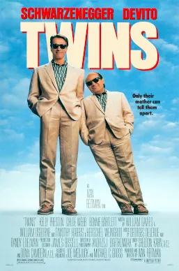

The genetics
Genetics provides the comedy's premise. Scientists in a secret programme try to engineer an ideal human by mixing the DNA of several exceptional donors; when the embryo splits, the joke is that one twin received all the desirable traits and the other the "leftovers", so that Arnold Schwarzenegger and Danny DeVito can play identical twins. The scientists are cold experimenters who deceive the mother about her children and abandon one of them, and one of them still calls Vincent a genetic failure decades later; the film sides with the brothers and suggests that loyalty and family matter more than pedigree. It also adds an element of nurture, as the twins grow up in opposite circumstances. Biologically the premise is impossible: identical (monozygotic) twins form when a single zygote splits into two embryos, so they carry essentially the same genome, and a split cannot sort good and bad genes between them.
How genetics is portrayed
- Overall portrayal of genetics
- negative The geneticists lie to the mother, discard one child and later label him a genetic failure, and the comedy sides with family and loyalty over pedigree; the eugenic project is what the film mocks, and its happy ending is won against it.
- Outcome of the genetic intervention
- mixed The experiment produces the gifted Julius but splits the family for 35 years: the mother is deceived and Vincent grows up abandoned; the happy reunion comes from the brothers' loyalty, not from the experiment.
- Secret 'perfect child' programme scientists (incl. Dr. Mitchell Traven)
- villain Aim: ideological, curiosity (negative). They combine the DNA of selected donors to engineer a physically and intellectually perfect human, tell the mother her baby died and abandon Vincent in an orphanage; decades later Traven dismisses Vincent as a 'genetic failure' and Julius angrily defends his brother, so the story condemns them.
- Professor Werner
- ambivalent Aim: ideological, curiosity (negative). One of the programme's scientists, he raises Julius as the perfect child on an island; he shared in the deception of the mother, but the film presents him warmly as the one who tells Julius about his brother and brings the mother to the reunion.
The story
A secret genetic experiment tries to create the perfect child by combining the DNA of several distinguished individuals, but the embryo splits into twins. The mother, Mary Ann Benedict, is told that her baby died. Julius is raised by one of the scientists on a remote island and grows into a strong, highly educated but naïve man, while Vincent is left in a Los Angeles orphanage and becomes a short, cynical small-time crook. On his 35th birthday Julius learns of his brother and finds him in Los Angeles. Vincent, deep in debt, steals a car carrying a prototype fuel injector worth five million dollars, and the brothers set off to deliver it while searching for their mother, pursued by a hitman. In the end the twins defeat the hitman, reunite with their mother and marry two sisters, each later having twins of his own.